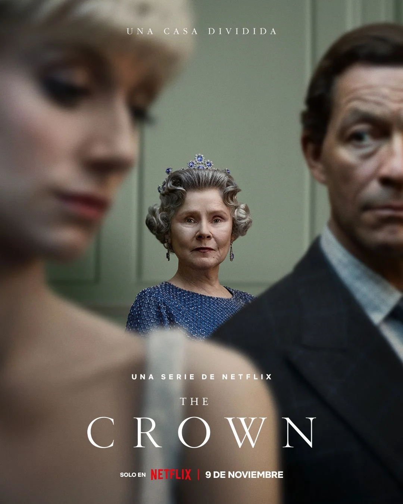

Breaking Bad
Una historia intensa sobre un profesor de química que se convierte en un cerebro del narcotráfico después de un diagnóstico de cáncer.
A continuación, te presentamos algunas de las series de drama más destacadas que no puedes perderte:
Una historia intensa sobre un profesor de química que se convierte en un cerebro del narcotráfico después de un diagnóstico de cáncer.
Un atraco a la Fábrica Nacional de Moneda y Timbre de España, liderado por un enigmático "Profesor", que se convierte en una saga llena de emoción, giros inesperados y complejos personajes.

Una mirada detallada a la vida de la Reina Isabel II desde su ascenso al trono, explorando los eventos políticos y personales que marcaron su reinado y la historia británica.
Una fantasía épica ambientada en el continente ficticio de Westeros, llena de intriga política, batallas monumentales, elementos fantásticos y la lucha por el control del Trono de Hierro.

Un drama criminal ambientado en Birmingham, Inglaterra, después de la Primera Guerra Mundial, que sigue a la ambiciosa y astuta familia de gánsteres Shelby, liderada por Tommy Shelby.
“Como forma de ritual y entretenimiento, el drama ha servido para unir comunidades y desafiar normas sociales, para deleitar y perturbar a su audiencia.”